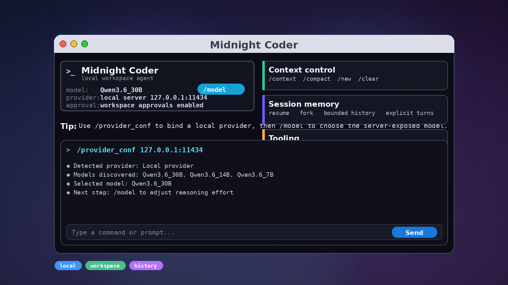

Explicit runtime
Provider, model, sandbox, and approvals are all chosen deliberately through the product's own settings and command flow.
Midnight Coder
A local-first coding agent built for explicit control over model selection, sandboxing, approvals, and conversation history. It keeps the runtime close to the workspace instead of hiding it behind a thin chat shell.

Provider, model, sandbox, and approvals are all chosen deliberately through the product's own settings and command flow.
Use /provider_conf to probe a local provider from an
ip:port address, detect available models, and save the
provider and model that were found.
Conversations persist as threads and turns, can be resumed or forked, and can be compacted when history needs trimming.
The terminal workflow powers the app-server, Python SDK, TypeScript SDK, and release packaging that keeps binary artifacts reproducible.
Local model control
Open /provider_conf and enter an address like
127.0.0.1:11434.
Midnight Coder probes the endpoint, checks /api/tags and
/v1/models, and stores the detected provider and model.
After that, use /model to pick the model exposed by the
server and choose the reasoning effort for the current run.
/provider_conf 127.0.0.1:11434
/model
The app probes the endpoint, detects available models,
and persists the provider and model.
Start a new chat to use the saved provider for the whole session./provider_conf or /provider-conf
ip:port or http://host:port
/api/tags and /v1/models
Context control
Context is not an opaque pile of tokens. Midnight Coder stores threads and turns, lets you resume a previous session, fork from an earlier state, and compact history when the conversation gets long.
The runtime also records diagnostics in a bounded local log store. When you need more visibility, you can enable a plaintext log directory for a run from inside the product.
Use /clear to start a fresh chat, /new to open
another chat during a conversation, and /compact when you
want the history trimmed.
/context
/mini-model
/resume-type
/new
/clear
/compactInstall
npm install -g midnight-coderMidnight Coder is published to npm for straightforward installation and team-wide version pinning.
The terminal workflow, app-server, and SDKs all share the same workspace runtime, so the same session, sandbox, and approval rules apply everywhere.
Integration surface
The terminal app stays close to the workspace and exposes the agent directly.
JSON-RPC transport for rich clients, including editor integrations.
Embed the agent into scripts, services, notebooks, or application code.
Support Midnight Coder
Your support helps keep Midnight Coder moving forward with new features, bug fixes, documentation, and infrastructure.
{kind=link}